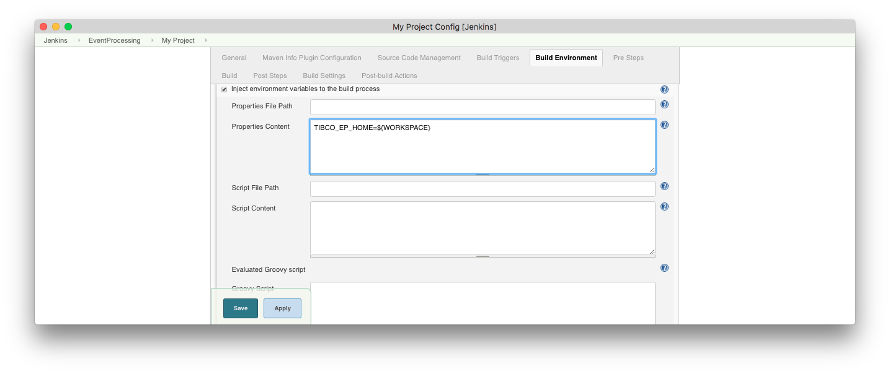

Cloud Software Group, Inc.
Cloud Software Group, Inc.Continuous integration examples
Jenkins
The Jenkins continuous integration server contains a maven project plugin that can easily be configured to build, test and deploy projects with the event processing maven plugin.
Project type
When creating a job, use the Maven project type :

Set environment
The environment variable TIBCO_EP_HOME must be defined - setting it to the jenkins workspace is recommended :

Build step
The maven goal has to be defined - typically this will be deploy so that the full default lifecycle is executed. Its also recommended to use a maven repository private to the workspace :

It is recommended to pass the environment variable BUILD_ID to created processes so that jenkins can find and kill any left over processes :
$ mvn -DenvironmentVariables=BUILD_ID=${BUILD_ID} ...
Other configurations
-
The source code management has to be defined so that Jenkins can find the source.
-
Suitable build nodes have to be defined
-
Additional Maven goals such as
siteandsonarcan be defined. -
Email notifications to the development team
-
Centralized Maven settings